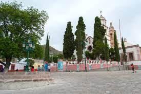
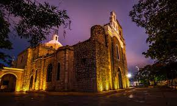
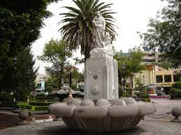

Los Siete Barrios de San Luis Potosí
Barrio de San Juan de Guadalupe

Barrio de Tlaxcala
Barrio de San Miguelito
Barrio de Montecillo

Barrio de San Sebastián
Barrio de Santiago

Barrio de Tequisquiapan